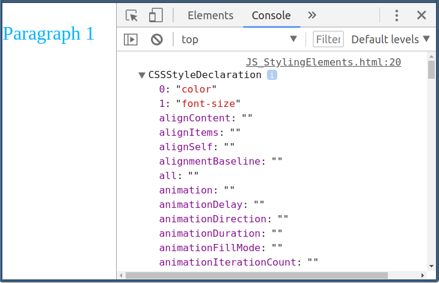

Created for
Created by
background-color => backgroundColorЕто как изглежда обект от тип CSSStyleDeclaration:
style атрибута, се представя в отделен CSSStyleDeclaration обект.element.stylecomputed style се представя в отделен CSSStyleDeclaration обект.window.getComputedStyle( element )innerHTML или contentText) на style елемента. style, в което се съдържа обект от тип CSSStyleDeclaration
Paragraph 1
var pNode = document.querySelector(".test");
// get the inline style of the paragraph:
var inlineStyleObj = pNode.style;
console.dir(inlineStyleObj);
Забележете, че в inlineStyleObj е представен само inline стилът, но не и всички правила, които се прилагат върху елемента!
Paragraph 1
var pNode = document.querySelector(".test");
// set inline style of the paragraph:
pNode.style.color = "#FFF";
pNode.style.backgroundColor = "#933";
getComputedStyle() на обекта window
var nodeComputedStyleObj = window.getComputedStyle( nodeObj );
Например:
Paragraph 1
var pNode = document.querySelector(".test");
var computedStyleObj = window.getComputedStyle( pNode );
console.dir(computedStyleObj);
These slides are based on
customised version of
framework
{kind=link}